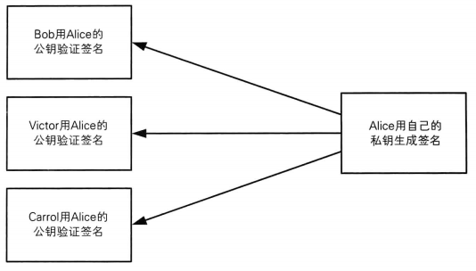
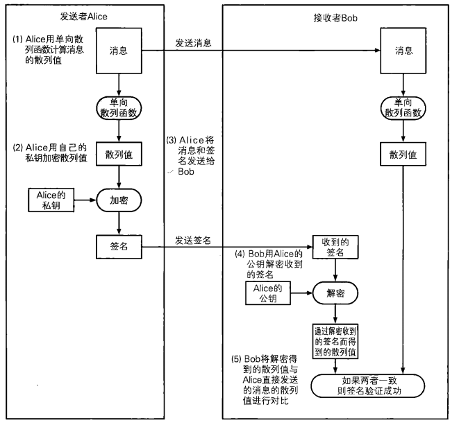

7. 数字签名
1 | "数字签名 --- 消息到底是谁写的" |
数字签名是一种将相当于现实世界中的盖章、签字的功能在计算机世界中进行实现的技术。使用数字签名可以识别篡改和伪装，还可以防止否认。
7.1 从消息认证到数字签名
消息认证码的局限性
通过使用第6章中介绍的消息认证码，我们可以识别消息是否被篡改或者发送者身份是否被伪装，也就是可以校验消息的完整性，还可以对消息进行认证。然而，比如在出具借条的场景中却无法使用消息认证码，因为消息认证码无法防止否认。
消息认证码之所以无法防止否认，是因为消息认证码需要在发送者Alice和接收者Bob两者之间共享同一个密钥。正是因为密钥是共享的，所以能够使用消息认证码计算出正确MAC值的并不只有发送者Alice，接收者Bob也可以计算出正确的MAC值。由于Alice和Bob双方都能够计算出正确的MAC值，因此对于第三方来说，我们无法证明这条消息的确是由Alice生成的。
通过数字签名解决问题
假设发送者Alice和接收者Bob不需要共享一个密钥，也就是说，Alice和Bob各自使用不同的密钥。
我们假设Alice使用的密钥是一个只有Alice自己才知道的私钥。当Alice发送消息时，她用私钥生成一个“签名”。相对地，接收者Bob则使用一个和Alice不同的密钥对签名进行验证。使用Bob的密钥无法根据消息生成签名，但是用Bob的密钥却可以对Alice所计算的签名进行验证，也就是说可以知道这个签名是否是通过Alice的密钥计算出来的。如果真有这么一种方法的话，那么不管是识别篡改、伪装还是防止否认就都可以实现了吧 ？
实际上这就是数字签名（digital signature）。
7.2 签名的生成和验证
在数字签名技术中，出现了下面两种行为：
- 生成消息签名的行为
- 验证消息签名的行为
生成消息签名这一行为是由消息的发送者Alice来完成的，也称为“对消息签名”。生成签名就是根据消息内容计算数字签名的值，这个行为意味着 “我认可该消息的内容”。
验证数字签名这一行为一般是由消息的接收者Bob来完成的，但也可以由需要验证消息的第三方来完成，这里的第三方我们暂且将其命名为验证者Victor。验证签名就是检查该消息的签名是否真的属于Alice，验证的结果可以是成功或者失败，成功就意味着这个签名是属于Alice的，失败则意味着这个签名不是属于Alice的。
在数字签名中，生成签名和验证签名这两个行为需要使用各自专用的密钥来完成。
Alice使用“签名密钥”来生成消息的签名，而Bob和Victor则使用“验证密钥”来验证消息的签名。数字签名对签名密钥和验证密钥进行了区分，使用验证密钥是无法生成签名的。这一点非常重要。此外，签名密钥只能由签名的人持有，而验证密钥则是任何需要验证签名的人都可以持有。
刚才讲的这部分内容，是不是觉得似曾相识呢？
没错，这就是我们讲过的非对称加密。公钥密码和上面讲的数字签名的结构非常相似。在非对称加密中，密钥分为加密密钥和解密密钥，用加密密钥无法进行解密。此外，解密密钥只能由需要解密的人持有，而加密密钥则是任何需要加密的人都可以持有。你看，数字签名和非对称加密是不是很像呢？
实际上，数字签名和非对称加密有着非常紧密的联系，简而言之，数字签名就是通过将非对称加密 “反过来用” 而实现的。下面我们来将密钥的使用方式总结成一张表：
| 私钥 | 公钥 | |
|---|---|---|
| 非对称加密 | 接收者解密时使用 | 发送者加密时使用 |
| 数字签名 | 签名者生成签名时使用 | 验证者验证签名时使用 |
| 谁持有秘钥 | 个人持有 | 只要需要，任何人都可以持有 |
7.3 非对称加密和数字签名
下面我们再来详细讲一讲非对称加密与数字签名之间的关系。
要实现数字签名，我们可以使用第4章中介绍的非对称加密。非对称加密包括一个由公钥和私钥组成的密钥对，其中公钥用于加密，私钥用于解密。

数字签名中也同样会使用公钥和私钥组成的密钥对，不过这两个密钥的用法和非对称加密是相反的，即用私钥加密相当于生成签名，而用公钥解密则相当于验证签名。请大家通过比较两张图示来理解一下“反过来用”到底是什么样的情形。

那么为什么加密相当于生成签名，而解密相当于验证签名呢？要理解这个问题，我们需要回想一下非对称加密中讲过的知识，即组成密钥对的两个密钥之间存在严密的数学关系，它们是一对无法拆散的伙伴。
用公钥加密所得到的密文，只能用与该公钥配对的私钥才能解密：同样地，用私钥加密所得到的密文，也只能用与该私钥配对的公钥才能解密。也就是说，如果用某个公钥成功解密了密文，那么就能够证明这段密文是用与该公钥配对的私钥进行加密所得到的。
用私钥进行加密这一行为只能由持有私钥的人完成，正是基于这一事实，我们才可以将用私钥加密的密文作为签名来对待。
由于公钥是对外公开的，因此任何人都能够用公钥进行解密，这就产生了一个很大的好处，即任何人都能够对签名进行验证。

7.3 数字签名的方法
下面我们来具体介绍两种生成和验证数字签名的方法。
- 直接对消息签名的方法
- 对消息的散列值签名的方法
直接对消息签名的方法比较容易理解，但实际上并不会使用；对消息的散列值签名的方法稍微复杂一点，但实际中我们一般都使用这种方法。
使用直接对消息签名的方法，需要对整个消息进行加密，非常耗时，这是因为非对称加密算法本来就非常慢。那么，我们能不能生成一条很短的数据来代替消息本身呢？这就是单向散列函数。
于是我们不必再对整个消息进行加密（即对消息签名），而是只要先用单向散列函数求出消息的散列值，然后再将散列值进行加密（对散列值签名）就可以了。无论消息有多长，散列值永远都是这么短，因此对其进行加密（签名）是非常轻松的。
（1）Alice用单向散列函数计算消息的散列值。
（2）Alice用自己的私钥对散列值进行加密。
用私钥加密散列值所得到的密文就是Alice对这条散列值的签名，由于只有Alice才持有自己的私钥因此, 除了Alice以外，其他人是无法生成相同的签名（密文）的。（3）Alice将消息和签名发送给Bob。
（4）Bob用Alice的公钥对收到的签名进行解密。
如果收到的签名确实是用Alice的私钥进行加密而得到的密文（签名），那么用Alice的公钥应该能够正确 解密，解密的结果应该等于消息的散列值。如果收到的签名不是用Alice的私钥进行加密而得到的密文， 那么就无法用Alice的公钥正确解密（解密后得到的数据看起来是随机的）。（5）Bob将签名解密后得到的散列值与Alice直接发送的消息的散列值进行对比。
如果两者一致，则签名验证成功；如果两者不一致，则签名验证失败。我们将数字签名中生成签名和验证签名的过程整理成一张时间流程图 。
**Alice对消息的散列值签名, Bob验证签名**
**Alice对消息的散列值签名, Bob验证签名(按时间顺序)**
7.4 数字签名无法解决的问题
用数字签名既可以识别出篡改和伪装，还可以防止否认。也就是说，我们同时实现了确认消息的完整性、进行认证以及否认防止。现代社会中的计算机通信从这一技术中获益匪浅。
然而，要正确使用数字签名，有一个大前提，那是用于验证签名的公钥必须属于真正的发送者。即便数字签名算法再强大，如果你得到的公钥是伪造的，那么数字签名也会完全失效。
现在我们发现自己陷人了一个死循环一一一数字签名是用来识别消息篡改、伪装以及否认的，但是为此我们又必须从没有被伪装的发送者得到没有被篡改的公钥才行。
为了能够确认自己得到的公钥是否合法，我们需要使用证书。所谓证书，就是将公钥当作一条消息，由一个可信的第三方对其签名后所得到的公钥。
当然，这样的方法只是把问题转移了而已。为了对证书上施加的数字签名进行验证，我们必定需要另一个公钥，那么如何才能构筑一个可信的数字签名链条呢？又由谁来颁发可信的证书呢？到这一步，我们就已经踏人了社会学的领域。我们需要让公钥以及数字签名技术成为一种社会性的基础设施，即公钥基础设施（Public Key Intrastructure），简称PKIO关于证书和PKI我们将在第8章中介绍。